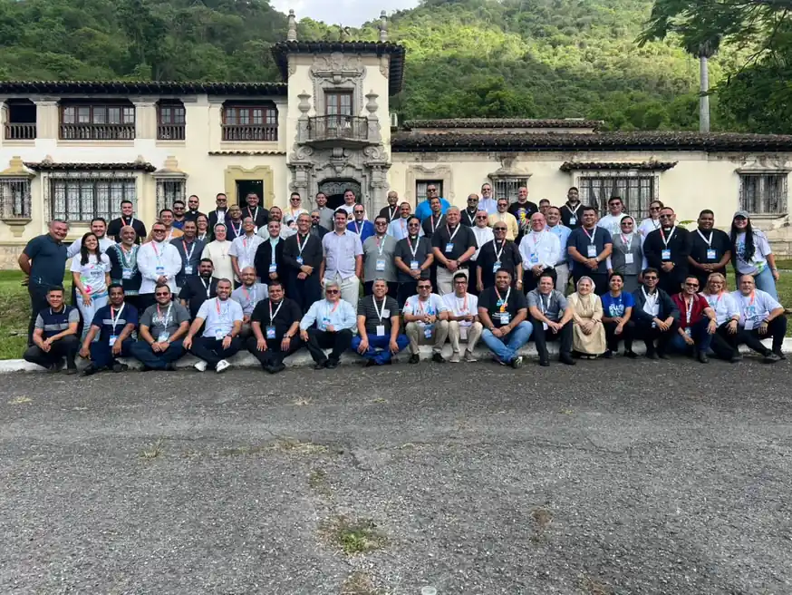

Laicos
Formación misionera y cultura del buen trato
El Área preparó a misioneros para Semana Santa 2026 y organizó un ciclo sobre prevención de abusos y cultura del buen trato.

Formación misionera de Semana Santa 2026
Se llamó «Uno en Cristo, unidos en la misión». La organizaron el Centro y Obras Misionales Pontificias (OMP) de Venezuela. Hubo dos sesiones virtuales, el 11 y el 20 de marzo de 2026: «Organicemos una misión» y «El Morral del Misionero: Tips para la Misión». CEV, 13-03-2026
La directora del Centro dio la bienvenida. Un asesor del Centro de Formación Misionera de las OMP y el secretario nacional de la Pontificia Obra de la Propagación de la Fe guiaron el trabajo. Los misioneros recibieron un decálogo práctico y el «Carnet de Vacunación Espiritual». CEV, 25-03-2026
El programa tuvo cuatro ejes: visibilización y comunión, formación y corresponsabilidad, acompañamiento integral, y articulación y relevo. Se invitó a registrar los lugares de misión para armar un mapa nacional. CEV, 13-03-2026
Ciclo sobre prevención de abusos y buen trato
Se realizó entre octubre y noviembre de 2025. Lo organizaron el Centro y la Comisión Nacional de Cultura del Buen Trato, Salvaguarda y Prevención. Iba dirigido a movimientos y asociaciones laicales y constó de cuatro encuentros virtuales. CEV, 15-10-2025
El 6 de octubre se habló de sensibilización. El 13, de la respuesta de la Iglesia, por la vía canónica y por la civil. El 10 de noviembre, del buen trato como tarea de todos. El 24, cada movimiento contó qué hace en su espacio, con el modelo «Justicia y Conversión»: verdad, justicia, reparación y reforma institucional. CEV, 27-11-2025
Al cierre, cada movimiento debía planificar sus propias acciones de prevención. CEV, 27-11-2025
En junio de 2026, durante el Encuentro de Asesores, se pidió crear espacios seguros en cada parroquia, con escucha sin juicio y protección de menores y personas vulnerables. CEV, 19-06-2026
El Plan Trienal 2023-2026 incluye este tema como proyecto del Centro. Plan Trienal CEV 2023